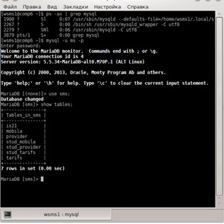
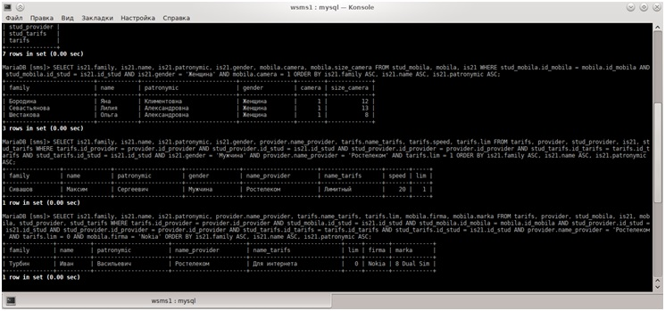
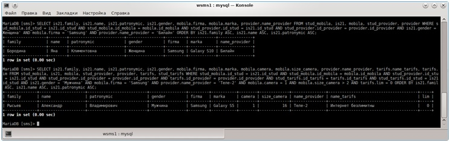

1. Запускаем сервер MySQL. 2. Входим в MySQLадминистратором (root). 3. Создаём базу данных с именем «sms» и пользователя с именем «ms». 4. Выходим из MySQLи входим с помощью созданного пользователя «ms». 5. Далее в базе «sms» создаем таблицу «is21» со следующей структурой: «Фамилия, имя, отчество, год рождения, рост, вес,пол» И заполняем её данными о студентах учебной группы. 6. Создаем таблицу «mobila» со следующей структурой: «фирма, марка, ёмкость аккумулятора, время до перезарядки в режиме разговора, наличие диктофона, формат записи диктофона, наличие фотоаппарата, разрешение фотоаппарата» И заполняем её данными о различных телефонах. 7. Создаем таблицу «provider» со следующей структурой: «название провайдера, сайт провайдера» И заполняем её данными о провайдерах города. 8. Создаем таблицу «tarifs» со следующей структурой: «название тарифного плана, провайдер, входящая скорость, лимитный/безлимитный» И заполняем её данными о тарифах разных провайдеров. 9. Создаем связывающие таблицы, которые будут содержать данные: 1) Каким провайдером пользуется студент 2) Каким телефоном пользуется студент 3) Каким тарифом провайдера пользуется студент 10. Выполним запросы: 1) «студенты женского пола, имеющие мобильник с фотоаппаратом» 2) «студенты мужского пола, у которых провайдер Волгателеком, тариф лимитный» 3) «студенты мужского пола, у которых мобильник Nokia, а провайдер Ростелеком, тариф безлимитный» 4) «студенты женского пола, имеющие мобильник Samsung, а провайдер Билайн (Корбина)» 5) «студенты мужского пола, у которых мобильник Samsung с фотоаппаратом с разрешением более 2 Мегапикселей, а провайдер Теле-2, тариф безлимитный» 11. Скриншот с выполненной командой ps–ax, показывающий что СУБД запущена и с подключением к базе данных с помощью созданного пользователя «ms»с выполненной командой «showtables;»:

Скриншоты с запросами

